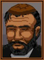
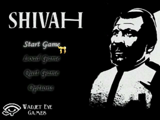
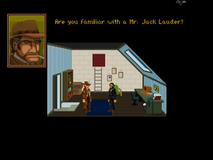
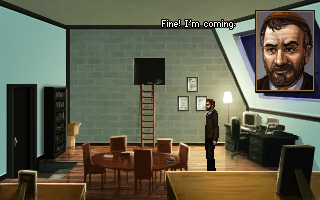
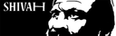

The Shivah
Dieser Artikel wurde für die folgenden Ubuntu-Versionen getestet:
Ubuntu 16.04 Xenial Xerus
Ubuntu 14.04 Trusty Tahr
Zum Verständnis dieses Artikels sind folgende Seiten hilfreich:

The Shivah  - Russell Stone ist ein Rabbi in einer New Yorker Synagoge. Er ist ein frommer Mann mit großen Problemen. Die Mitgliederzahl seiner Gemeinde sinkt und auch um die finanziellen Mittel steht es nicht gut. Eines Tages erreicht ihn eine interessante Nachricht. Ein ehemaliges Mitglied der Gemeinde hat ihm nach dem Tode eine beträchtliche Summe Geld hinterlassen. Ist das ein Segen? Oder ein Fluch?
- Russell Stone ist ein Rabbi in einer New Yorker Synagoge. Er ist ein frommer Mann mit großen Problemen. Die Mitgliederzahl seiner Gemeinde sinkt und auch um die finanziellen Mittel steht es nicht gut. Eines Tages erreicht ihn eine interessante Nachricht. Ein ehemaliges Mitglied der Gemeinde hat ihm nach dem Tode eine beträchtliche Summe Geld hinterlassen. Ist das ein Segen? Oder ein Fluch?
Drei unterschiedliche Enden und vollständige Sprachausgabe runden das Spielerlebnis ab.
Diese Anleitung bezieht sich nicht auf die Kosher Edition, welche derzeit unter Linux nur via Wine lauffähig ist.
|  |  |
| Menü | Spielszene |
Installation¶
Nach dem Erwerb des jeweiligen Spiels auf der Entwicklerseite oder über Desura kann man dieses von der persönlichen Seite herunterladen.
Spieledateien¶
Nachdem man die Installationsdateien für Windows heruntergeladen hat, werden die benötigten Spieledateien entpackt [1]:
innoextract Shivah_setup.exe
Extracting "The Shivah v1.2" - setup data version 5.1.7 - "app/shivah.exe" (18.6 MiB) - "app/music.vox" (22 MiB) - "app/shivah_help.txt" (4.74 KiB) - "app/speech.vox" (67.4 MiB) - "app/winsetup.exe" (48 KiB) - "app/acsetup.cfg" (223 B) Done.
Den Ordner app anschließend nach theshivah umbenennen und nach ~/Spiele verschieben.
Spiel-Engine¶
Um das Spiel unter Linux nativ verwenden zu können, ist es nötig, die Spiele-Engine Adventure Game Studio zu kompilieren [2].
|  |
| The Shivah: Kosher Edition |
Spielstart¶
Über ags kann das Spiel aus dem Installationsverzeichnis heraus gestartet [3] werden. Auf Wunsch einen Menüeintrag [4] vornehmen.
Konfiguration¶
Die Konfigurationsdatei acsetup.cfg aus dem Spieleordner kann mit einem Editor bearbeitet werden [5].
Tastenkürzel¶
| Tastenkürzel | |
| Taste(n) | Funktion |
 | Standardaktionen ausführen / Doppelklick macht dies rückgängig |
 | Interface aufrufen |
| F5 / F7 | Spielstand speichern / laden |
| F9 | Spiel neu starten. |
| F10 | Automatisch gespeicherten Spielstand laden |
| Esc | Abbrechen |
| Strg + Q | Spiel beenden |

Infobox¶
| The Shivah | |
| Originaltitel: | The Shivah |
| Genre: | Adventure |
| Sprache: | |
| Veröffentlichungen: | 2006 |
| Publisher: | Wadjet Eye Games |
| Systemvoraussetzungen: | - |
| Medien: | Download |
| Strichcode / EAN / GTIN: | - |
| Läuft mit: | nativ |


- Erstellt mit Inyoka
-
 2004 – 2017 ubuntuusers.de • Einige Rechte vorbehalten
2004 – 2017 ubuntuusers.de • Einige Rechte vorbehalten
Lizenz • Kontakt • Datenschutz • Impressum • Serverstatus -
Serverhousing gespendet von